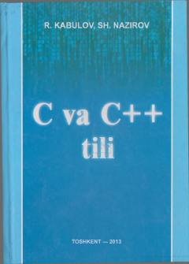

CVC va C++ tillarida strukturali va obyektga yo'naltirilgan dasturlash bo'yicha o'quv qo'llanma.
Ushbu o'quv qo'llanma C va C++ tillarida dasturlash asoslarini o'rgatishga bag'ishlangan bo'lib, strukturali va obyektga yo'naltirilgan dasturlar yaratish ko'nikmalarini shakllantiradi. Kitobda o'zgaruvchilar, funksiyalar, dinamik xotira, sinflar, vorislik hamda amallarni qo'shimcha yuklash kabi mavzular batafsil yoritilgan. Qo'llanma oliy o'quv yurtlari talabalari va kasb-hunar ta'limi o'quvchilari uchun mo'ljallangan.